공인중개사-2차 (2015-10-24 기출문제)
1과목: 임의구분
1. 공인중개사법령상 용어와 관련된 설명으로 옳은 것은?(다툼이 있으면 판례에 따름)
- 법정지상권을 양도하는 행위를 알선하는 것은 중개에 해당한다.
- 반복, 계속성이나 영업성 없이 단 1회 건물매매계약의 중개를 하고 보수를 받은 경우 중개를 업으로 한 것으로 본다.
- 외국의 법에 따라 공인중개사 자격을 취득한 자도 공인중개사법에서 정의하는 공인중개사로 본다.
- 소속공인중개사란 법인인 개업공인중개사에 소속된 공인중개사만을 말한다.
- 중개보조원이란 공인중개사가 아닌 자로서 개업공인중개사에 소속되어 중개대상물에 대한 현장안내와 중개대상물의 확인ㆍ설명의무를 부담하는 자를 말한다.
(정답률: 66%)

2. 공인중개사법령상 중개대상에 관한 설명으로 틀린 것은?(다툼이 있으면 판례에 따름)
- 중개대상물인 ‘건축물’에는 기존의 건축물뿐만 아니라 장차 건축될 특정의 건물도 포함될 수 있다.
- 공용폐지가 되지 아니 한 행정재산인 토지는 중개대상물에 해당하지 않는다.
- 「입목에 관한 법률」에 따라 등기된 입목은 중개대상물에 해당한다.
- 주택이 철거될 경우 일정한 요건하에 택지개발지구 내에 이주자 택지를 공급받을 지위인 대토권은 중개대상물에 해당하지 않는다.
- “중개”의 정의에서 말하는 ‘그 밖의 권리’에 저당권은 포함되지 않는다.
(정답률: 66%)
3. 공인중개사법령상 공인중개사 자격증이나 중개사무소 등록증의 교부에 관한 설명으로 틀린 것은?
- 자격증 및 등록증의 교부는 국토교통부령이 정하는 바에 따른다.
- 등록증은 중개사무소를 두려는 지역을 관할하는 시장(구가 설치되지 아니한 시의 시장과 특별자치도 행정시의 시장을 말함)ㆍ군수 또는 구청장이 교부한다.
- 자격증 및 등록증을 잃어버리거나 못쓰게 된 경우에는 시ㆍ도지사에게 재교부를 신청한다.
- 등록증을 교부한 관청은 그 사실을 공인중개사협회에 통보해야 한다.
- 자격증의 재교부를 신청하는 자는 당해 지방자치단체의 조례가 정하는 바에 따라 수수료를 납부해야 한다.
(정답률: 62%)
4. 공인중개사법령상 법인이 중개사무소를 개설하려는 경우 그 등록기준의 내용으로 옳은 것을 모두 고른 것은?(다른 법률에 따라 중개업을 할 수 있는 경우는 제외함)
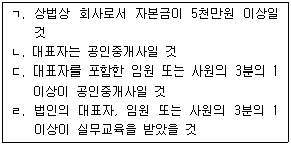
- ㄱ
- ㄱ, ㄴ
- ㄷ, ㄹ
- ㄱ, ㄴ, ㄷ
- ㄱ, ㄴ, ㄷ, ㄹ
(정답률: 59%)
5. 2015년 10월 23일 현재 공인중개사법령상 중개사무소 개설등록 결격사유에 해당하는 자는?(주어진 조건만 고려함)
- 형의 선고유예 기간 중에 있는 자
- 2009년 4월 15일 파산선고를 받고 2015년 4월 15일 복권된 자
- 「도로교통법」을 위반하여 2012년 11월 15일 벌금 500만원을 선고받은 자
- 거짓으로 중개사무소의 개설등록을 하여 2012년 11월 15일 개설등록이 취소된 자
- 2015년 4월 15일 공인중개사 자격의 정지처분을 받은 자
(정답률: 59%)
6. 공인중개사법령상 중개사무소의 설치에 관한 설명으로 틀린 것은?
- 법인 아닌 개업공인중개사는 분사무소를 둘 수 없다.
- 분사무소의 설치는 업무정지기간 중에 있는 다른 개업 공인중개사의 중개사무소를 공동으로 사용하는 방법으로는 할 수 없다.
- 법인인 개업공인중개사가 분사무소를 설치하려는 경우 분사무소 소재지의 시장ㆍ군수 또는 구청장에게 신고해야 한다.
- 공인중개사법을 위반하여 2 이상의 중개사무소를 둔 경우 등록관청은 중개사무소의 개설등록을 취소할 수 있다.
- 개업공인중개사는 이동이 용이한 임시 중개시설물을 설치해서는 아니된다.
(정답률: 63%)
7. 공인중개사법령상 법인인 개업공인중개사가 겸업할 수 있는 업무를 모두 고른 것은?(다른 법률에 따라 중개업을 할 수 있는 경우는 제외함)
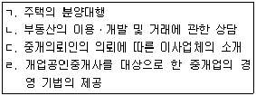
- ㄱ, ㄷ
- ㄴ, ㄷ
- ㄱ, ㄴ, ㄷ
- ㄱ, ㄴ, ㄹ
- ㄱ, ㄴ, ㄷ, ㄹ
(정답률: 65%)
8. 공인중개사법령상 개업공인중개사의 고용인과 관련된 설명으로 옳은 것은?(다툼이 있으면 판례에 따름)
- 소속공인중개사에 대한 고용신고를 받은 등록관청은 공인중개사 자격증을 발급한 시ㆍ도지사에게 그 자격 확인을 요청해야 한다.
- 개업공인중개사가 소속공인중개사를 고용한 경우 그 업무개시 후 10일 이내에 등록관청에 신고해야 한다.
- 소속공인중개사는 고용신고일 전 1년 이내에 직무교육을 받아야 한다.
- 중개보조원의 업무상 행위는 그를 고용한 개업공인중개사의 행위로 추정한다.
- 중개보조원의 업무상 과실로 인한 불법행위로 의뢰인에게 손해를 입힌 경우 개업공인중개사가 손해배상책임을 지고 중개보조원은 그 책임을 지지 않는다.
(정답률: 53%)
9. 공인중개사법령상 공인중개사 자격ㆍ자격증, 중개사무소 등록증에 관한 설명으로 틀린 것은?(다툼이 있으면 판례에 따름)
- 자격증 대여행위는 유ㆍ무상을 불문하고 허용되지 않는다.
- 자격을 취득하지 않은 자가 자신의 명함에 ‘부동산뉴스(중개사무소의 상호임) 대표’라는 명칭을 기재하여 사용한 것은 공인중개사와 유사한 명칭을 사용한 것에 해당 한다.
- 공인중개사가 자기 명의로 개설등록을 마친 후 무자격자에게 중개사무소의 경영에 관여하게 하고 이익을 분배하였더라도 그 무자격자에게 부동산거래 중개행위를 하도록 한 것이 아니라면 등록증 대여행위에 해당하지 않는다.
- 개업공인중개사가 등록증을 타인에게 대여한 경우 공인중개사 자격의 취소사유가 된다.
- 자격증이나 등록증을 타인에게 대여한 자는 1년 이하의 징역 또는 1천만원 이하의 벌금에 처한다.
(정답률: 48%)
10. 공인중개사법령상 등록관청 관할지역 외의 지역으로 중개사무소를 이전한 경우에 관한 설명으로 틀린 것은?
- 개업공인중개사는 이전 후의 중개사무소를 관할하는 등록관청에 이전사실을 신고해야 한다.
- 법인인 개업공인중개사가 분사무소를 이전한 경우 이전후의 분사무소를 관할하는 등록관청에 이전사실을 신고해야 한다.
- 등록관청은 중개사무소의 이전신고를 받은 때에는 그 사실을 공인중개사협회에 통보해야 한다.
- 이전신고 전에 발생한 사유로 인한 개업공인중개사에 대한 행정처분은 이전후 등록관청이 이를 행한다.
- 업무정지 중이 아닌 다른 개업공인중개사의 중개사무소를 공동사용하는 방법으로 사무소의 이전을 할 수 있다.
(정답률: 63%)
11. 공인중개사법령상 개업공인중개사의 휴업의 신고에 관한 설명으로 옳은 것을 모두 고른 것은?
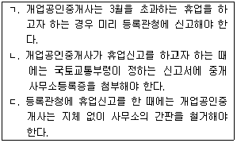
- ㄱ
- ㄴ
- ㄱ, ㄴ
- ㄴ, ㄷ
- ㄱ, ㄴ, ㄷ
(정답률: 55%)
12. 전속중개계약을 체결한 개업공인중개사가 공인중개사법령상 공개해야 할 중개대상물에 대한 정보에 해당하는 것을 모두 고른 것은?(중개의뢰인이 비공개를 요청하지 않은 경우임)
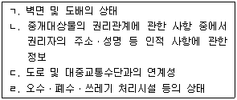
- ㄱ, ㄷ
- ㄱ, ㄹ
- ㄴ, ㄹ
- ㄱ, ㄷ, ㄹ
- ㄱ, ㄴ, ㄷ, ㄹ
(정답률: 63%)
13. 공인중개사법령의 내용으로 옳은 것은?(다툼이 있으면 판례에 따름)
- 지역농업협동조합이 농지의 임대차에 관한 중개업무를 하려면 공인중개사법에 따라 중개사무소 개설등록을 해야 한다.
- 휴업기간 중에 있는 개업공인중개사는 다른 개업공인중개사인 법인의 사원이 될 수 있다.
- 시ㆍ도지사가 공인중개사의 자격정지처분을 한 경우에 다른 시ㆍ도지사에게 통지해야 하는 규정이 없다.
- 등록의 결격사유 중 ‘이 법을 위반하여 300만원 이상의 벌금형의 선고를 받고 3년이 경과되지 아니한 자’에는 개업공인중개사가 사용주로서 양벌규정으로 처벌받는 경우도 포함된다.
- 업무의 정지에 관한 기준은 대통령령으로 정하고, 과태료는 국토교통부령으로 정하는 바에 따라 부과ㆍ징수한다.
(정답률: 48%)
14. 개업공인중개사가 작성하는 거래계약서에 기재해야 할 사항으로 공인중개사법령상 명시된 것을 모두 고른 것은?
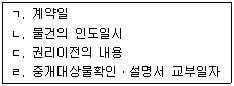
- ㄱ, ㄴ, ㄷ
- ㄱ, ㄴ, ㄹ
- ㄱ, ㄷ, ㄹ
- ㄴ, ㄷ, ㄹ
- ㄱ, ㄴ, ㄷ, ㄹ
(정답률: 60%)
15. 개업공인중개사가 2015년 10월 23일 중개를 의뢰받아 공인중개사법령상 중개대상물의 확인ㆍ설명을 하는 경우에 관한 내용으로 틀린 것은?
- 개업공인중개사는 중개가 완성되기 전에 확인ㆍ설명 사항을 확인하여 이를 당해 중개대상물에 관한 권리를 취득하고자 하는 중개의뢰인에게 설명해야 한다.
- 개업공인중개사가 성실ㆍ정확하게 중개대상물의 확인ㆍ설명을 하지 아니하면 업무정지사유에 해당한다.
- 중개대상물에 대한 권리를 취득함에 따라 부담해야 할 조세의 종류 및 세율은 개업공인중개사가 확인ㆍ설명해야 할 사항이다.
- 개업공인중개사는 거래계약서를 작성하는 때에는 확인ㆍ설명서를 작성하여 거래당사자에게 교부하고 확인ㆍ설명서 사본을 3년 동안 보존해야 한다.
- 확인ㆍ설명서에는 개업공인중개사가 서명 및 날인하되, 당해 중개행위를 한 소속공인중개사가 있는 경우에는 소속공인중개사가 함께 서명 및 날인해야 한다.
(정답률: 45%)
16. 공인중개사법령상 중개보수에 관한 설명으로 틀린 것은?(다툼이 있으면 판례에 따름)
- 공인중개사 자격이 없는 자가 중개사무소 개설등록을 하지 아니한 채 부동산중개업을 하면서 거래당사자와 체결한 중개보수 지급약정은 무효이다.
- 개업공인중개사와 중개의뢰인간에 중개보수의 지급시기 약정이 없을 때는 중개대상물의 거래대금 지급이 완료된 날로 한다.
- 주택(부속토지 포함) 외의 중개대상물의 중개에 대한 보수는 국토교통부령으로 정한다.
- 주택(부속토지 포함)의 중개에 대한 보수는 중개의뢰인 쌍방으로부터 각각 받되, 그 일방으로부터 받을 수 있는 한도는 매매의 경우에는 거래금액의 1천분의 9이내로 한다.
- 중개대상물의 소재지와 중개사무소의 소재지가 다른 경우 개업공인중개사는 중개대상물의 소재지를 관할하는 시ㆍ도의 조례에 따라 중개보수를 받아야 한다.
(정답률: 56%)
17. 공인중개사법령상 손해배상책임의 보장에 관한 설명으로 옳은 것을 모두 고른 것은?
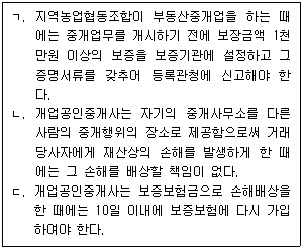
- ㄱ
- ㄴ
- ㄱ, ㄷ
- ㄴ, ㄷ
- ㄱ, ㄴ, ㄷ
(정답률: 58%)
18. 공인중개사법령상 개업공인중개사의 금지행위와 그에 대한 벌칙의 연결이 옳은 것을 모두 고른 것은?
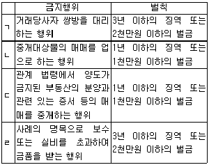
- ㄱ, ㄴ
- ㄱ, ㄷ
- ㄱ, ㄹ
- ㄴ, ㄷ
- ㄷ, ㄹ
(정답률: 28%)
19. 공인중개사법령상 개업공인중개사등의 교육에 관한 설명으로 옳은 것은?
- 실무교육을 받은 개업공인중개사는 실무교육을 받은 후 2년 마다 시ㆍ도지사가 실시하는 직무교육을 받아야 한다.
- 분사무소의 책임자가 되고자 하는 공인중개사는 고용신고일 전 1년 이내에 시ㆍ도지사가 실시하는 연수교육을 받아야 한다.
- 고용관계 종료 신고 후 1년 이내에 다시 중개보조원으로 고용신고의 대상이 된 자는 시ㆍ도지사 또는 등록관청이 실시하는 직무교육을 받지 않아도 된다.
- 실무교육은 28시간 이상 32시간 이하, 연수교육은 3시간 이상 4시간 이하로 한다.
- 국토교통부장관이 마련하여 시행하는 교육지침에는 교육대상, 교육과목 및 교육시간 등이 포함되어야 하나, 수강료는 그러하지 않다.
(정답률: 52%)
20. 공인중개사법령상 개업공인중개사의 업무정지 사유인 동시에 중개행위를 한 소속공인중개사의 자격정지 사유에 해당하는 것은?
- 최근 1년 이내에 공인중개사법에 의하여 2회 이상 업무정지 처분을 받고 다시 과태료의 처분에 해당하는 행위를 한 경우
- 거래계약서 사본을 보존기간동안 보존하지 아니한 경우
- 거래계약서를 작성ㆍ교부하지 아니한 경우
- 중개대상물확인ㆍ설명서에 서명 및 날인을 하지 아니한 경우
- 중개대상물확인ㆍ설명서를 교부하지 아니한 경우
(정답률: 52%)
21. 공인중개사법령상 개업공인중개사의 사유로 중개사무소 개설등록을 취소할 수 있는 경우가 아닌 것은?
- 중개사무소 등록기준에 미달하게 된 경우
- 국토교통부령이 정하는 전속중개계약서에 의하지 아니하고 전속중개계약을 체결한 경우
- 이동이 용이한 임시 중개시설물을 설치한 경우
- 대통령령으로 정하는 부득이한 사유가 없음에도 계속하여 6월을 초과하여 휴업한 경우
- 손해배상책임을 보장하기 위한 조치를 이행하지 아니하고 업무를 개시한 경우
(정답률: 53%)
22. 공인중개사법령상 부동산거래정보망에 관한 설명으로 틀린 것은?
- 거래정보사업자는 의뢰받은 내용과 다르게 정보를 공개해서는 아니된다.
- 거래정보사업자는 개업공인중개사로부터 공개를 의뢰받은 중개대상물의 정보에 한하여 이를 부동산거래정보망에 공개해야 한다.
- 거래정보사업자가 정당한 사유없이 지정받은 날부터 1년 이내에 부동산거래정보망을 설치ㆍ운영하지 아니한 경우에는 그 지정을 취소해야 한다.
- 거래정보사업자는 지정받은 날부터 3월 이내에 부동산거래정보망의 이용 및 정보제공방법 등에 관한 운영규정을 정하여 국토교통부장관의 승인을 얻어야 한다.
- 개업공인중개사는 당해 중개대상물의 거래가 완성된 때에는 지체 없이 이를 당해 거래정보사업자에게 통보해야 한다.
(정답률: 50%)
23. 공인중개사법령상 개업공인중개사인 甲에 대한 처분으로 옳음(O), 틀림(X)의 표기가 옳은 것은?(주어진 사례의 조건만 고려함)
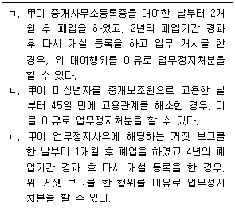
- ㄱ-(O), ㄴ-(O), ㄷ-(O)
- ㄱ-(O), ㄴ-(O), ㄷ-(X)
- ㄱ-(O), ㄴ-(X), ㄷ-(X)
- ㄱ-(X), ㄴ-(O), ㄷ-(X)
- ㄱ-(X), ㄴ-(X), ㄷ-(X)
(정답률: 53%)
24. 공인중개사법령상 포상금에 관한 설명으로 틀린 것은?
- 등록관청은 거짓으로 중개사무소의 개설등록을 한 자를 수사기관에 신고한 자에게 포상금을 지급할 수 있다.
- 포상금의 지급에 소요되는 비용은 그 전부 또는 일부를 국고에서 보조할 수 있다.
- 포상금은 1건당 50만원으로 한다.
- 포상금지급신청서를 제출받은 등록관청은 포상금의 지급을 결정한 날부터 1월 이내에 포상금을 지급해야 한다.
- 하나의 사건에 대하여 포상금 지급요건을 갖춘 2건의 신고가 접수된 경우, 등록관청은 최초로 신고한 자에게 포상금을 지급한다.
(정답률: 53%)
25. 공인중개사법령상 100만원 이하의 과태료 부과대상인 개업공인중개사에 해당하지 않는 자는?
- 중개사무소를 이전한 날부터 10일 이내에 이전신고를 하지 아니한 자
- 중개사무소등록증을 게시하지 아니한 자
- 공인중개사법에 따른 연수교육을 정당한 사유 없이 받지 아니한 자
- 사무소의 명칭에 “공인중개사사무소” 또는 “부동산중개”라는 문자를 사용하지 아니한 자
- 「옥외광고물 등 관리법」에 따른 옥외 광고물에 성명을 거짓으로 표기한 자
(정답률: 56%)
26. 공인중개사법령상 공인중개사의 자격취소에 관한 설명으로 틀린 것은?
- 자격취소처분은 중개사무소의 소재지를 관할하는 시ㆍ도지사가 한다.
- 시ㆍ도지사는 자격증 대여를 이유로 자격을 취소하고자 하는 경우 청문을 실시해야 한다.
- 시ㆍ도지사는 자격취소처분을 한 때에는 5일 이내에 이를 국토교통부장관에게 보고하고 다른 시ㆍ도지사에게 통지해야 한다.
- 자격취소처분을 받아 자격증을 반납하고자 하는 자는 그 처분을 받은 날부터 7일 이내에 반납해야 한다.
- 자격이 취소된 자는 자격증을 교부한 시ㆍ도지사에게 그 자격증을 반납해야 한다.
(정답률: 59%)
27. 공인중개사법령의 내용으로 옳은 것은?
- 등록관청은 개업공인중개사등의 부동산거래사고 예방을 위한 교육을 실시할 수 없다.
- 개업공인중개사는 등록관청에 중개사무소의 이전사실을 신고한 경우 지체 없이 사무소의 간판을 철거해야 한다.
- 개업공인중개사로서 폐업신고를 한 후 1년 이내에 소속 공인중개사로 고용 신고의 대상이 된 자는 고용 신고일전에 다시 실무교육을 받아야 한다.
- 개업공인중개사가 조직한 사업자단체가「독점규제 및 공정거래에 관한 법률」을 위반하여 공정거래위원회로부터 과징금 처분을 최근 2년 이내에 2회 이상 받은 경우 그의 공인중개사 자격이 취소된다.
- 중개보조원은 중개사무소의 명칭, 소재지 및 연락처, 자기의 성명을 명시하여 중개대상물에 대한 표시ㆍ광고를 할 수 있다.
(정답률: 55%)
28. 부동산 거래신고에 관한 법령상 부동산거래신고에 관한 설명으로 틀린 것은?
- 「도시 및 주거환경정비법」에 따른 관리처분계획의 인가로 취득한 입주자로 선정된 지위에 관한 매매계약을 체결한 경우 거래신고를 해야 한다.
- 공인중개사법령상 중개대상물에 해당한다고 하여 모두 부동산거래 신고의 대상이 되는 것은 아니다.
- 거래의 신고를 받은 등록관청은 그 신고내용을 확인한 후 신고인에게 부동산거래계약 신고필증을 즉시 발급해야 한다.
- 거래의 신고를 하려는 개업공인중개사는 부동산거래계약 신고서에 서명 또는 날인하여 중개사무소 소재지 등록관청에 제출해야 한다.
- 거래의 신고를 해야 하는 개업공인중개사의 위임을 받은 소속공인중개사는 부동산거래계약 신고서의 제출을 대행할 수 있다.
(정답률: 48%)
29. 공인중개사법령상 공인중개사인 개업공인중개사의 거래계약서 작성 등에 관한 설명으로 틀린 것은?
- 거래계약서는 국토교통부장관이 정한 표준서식을 사용해야 한다.
- 거래계약서에 거래내용을 거짓으로 기재한 경우 등록관청은 중개사무소 개설등록을 취소할 수 있다.
- 개업공인중개사는 하나의 거래계약에 서로 다른 2 이상의 거래계약서를 작성해서는 아니된다.
- 개업공인중개사가 거래계약서 사본을 보존해야 하는 기간은 5년이다.
- 거래계약서에는 당해 중개행위를 한 소속공인중개사가 있는 경우 개업공인중개사와 소속공인중개사가 함께 서명 및 날인해야 한다.
(정답률: 54%)
30. 공인중개사법령상 전속중개계약에 관한 설명으로 틀린 것은?
- 개업공인중개사는 중개의뢰인에게 전속중개계약체결 후 2주일에 1회 이상 중개업무 처리상황을 문서로 통지해야 한다.
- 전속중개계약의 유효기간은 당사자간 다른 약정이 없는 경우 3개월로 한다.
- 개업공인중개사가 전속중개계약을 체결한 때에는 그 계약서를 5년 동안 보존해야 한다.
- 개업공인중개사는 중개의뢰인이 비공개를 요청한 경우 중개대상물에 관한 정보를 공개해서는 아니된다.
- 전속중개계약에 정하지 않은 사항에 대하여는 중개의뢰인과 개업공인중개사가 합의하여 별도로 정할 수 있다.
(정답률: 62%)
31. 甲은 개업공인중개사 丙에게 중개를 의뢰하여 乙 소유의 전용면적 70제곱미터 오피스텔을 보증금 2천만원, 월차임 25만원에 임대차계약을 체결하였다. 이 경우 丙이 甲으로부터 받을 수 있는 중개보수의 최고한도액은?(임차한 오피스텔은 건축법령상 업무시설로 상ㆍ하수도 시설이 갖추어진 전용입식 부엌, 전용수세식 화장실 및 목욕시설을 갖춤)
- 150,000원
- 180,000원
- 187,500원
- 225,000원
- 337,500원
(정답률: 53%)
32. 개업공인중개사가 중개의뢰인에게 주택임대차보호법령에 대해 설명한 내용으로 틀린 것은?(다툼이 있으면 판례에 따름)
- 차임의 증액청구에 관한 규정은 임대차계약이 종료된 후 재계약을 하는 경우에는 적용되지 않는다.
- 확정일자는 확정일자번호, 확정일자 부여일 및 확정일자부여기관을 주택임대차계약증서에 표시하는 방법으로 부여한다.
- 주택임차인이 그 지위를 강화하고자 별도로 전세권설정 등기를 마쳤더라도 주택임대차보호법상 대항요건을 상실하면 이미 취득한 주택임대차보호법상 대항력 및 우선변제권을 상실한다.
- 임차인이 다세대주택의 동ㆍ호수 표시 없이 그 부지 중 일부 지번으로만 주민등록을 한 경우, 대항력을 취득할수 없다.
- 「지방공기업법」에 따라 주택사업을 목적으로 설립된 지방공사는 주택임대차보호법상 대항력이 인정되는 법인이 아니다.
(정답률: 49%)
33. 개업공인중개사가 중개의뢰인에게 상가건물 임대차보호법에 대해 설명한 내용으로 틀린 것은?
- 권리금 계약이란 신규임차인이 되려는 자가 임차인에게 권리금을 지급하기로 하는 계약을 말한다.
- 임차인의 차임연체액이 3기의 차임액에 달하는 때에는 임대인은 계약을 해지할 수 있다.
- 국토교통부장관은 권리금에 대한 감정평가의 절차와 방법 등에 관한 기준을 고시할 수 있다.
- 국토교통부장관은 권리금 계약을 체결하기 위한 표준권리금계약서를 정하여 그 사용을 권장할 수 있다.
- 보증금이 전액 변제되지 아니한 대항력이 있는 임차권은 임차건물에 대하여「민사집행법」에 따른 경매가 실시된 경우에 그 임차건물이 매각되면 소멸한다.
(정답률: 53%)
34. 개업공인중개사가 중개의뢰인에게 농지법상 농지의 임대차에 대해 설명한 내용으로 틀린 것은?
- 선거에 따른 공직취임으로 인하여 일시적으로 농업경영에 종사하지 아니하게 된 자가 소유하고 있는 농지는 임대할 수 있다.
- 농업경영을 하려는 자에게 농지를 임대하는 임대차계약은 서면계약을 원칙으로 한다.
- 농지이용증진사업 시행계획에 따라 농지를 임대하는 경우 임대차기간은 5년 이상으로 해야 한다.
- 농지 임대차계약의 당사자는 임차료에 관하여 협의가 이루어지지 아니한 경우 농지소재지를 관할하는 시장ㆍ군수 또는 자치구구청장에게 조정을 신청할 수 있다.
- 임대 농지의 양수인은 농지법에 따른 임대인의 지위를 승계한 것으로 본다.
(정답률: 49%)
35. 공인중개사법령상 토지 매매의 경우 중개대상물 확인ㆍ설명서 서식의 ‘개업공인중개사 기본 확인사항’에 해당하지 않는 것은?
- 입지조건
- 실제 권리관계 또는 공시되지 않은 물건의 권리사항
- 거래예정금액
- 취득 시 부담할 조세의 종류 및 세율
- 비선호시설(1km이내)
(정답률: 28%)
36. 공인중개사법령상 개업공인중개사가 비주거용 건축물의 중개대상물 확인ㆍ설명서를 작성하는 방법에 관한 설명으로 틀린 것은?
- ‘대상물건의 표시’는 토지대장 및 건축물대장 등을 확인하여 적는다.
- ‘권리관계’의 “등기부기재사항”은 등기사항증명서를 확인하여 적는다.
- “건폐율 상한 및 용적률 상한”은 시ㆍ군의 조례에 따라 적는다.
- “중개보수”는 실제거래금액을 기준으로 계산하고, 협의가 없는 경우 부가가치세는 포함된 것으로 본다.
- 공동중개 시 참여한 개업공인중개사(소속공인중개사 포함)는 모두 서명 및 날인해야 한다.
(정답률: 53%)
37. 개업공인중개사가 민사집행법에 따른 경매에 대해 의뢰인에게 설명한 내용으로 옳은 것은?
- 기일입찰에서 매수신청인은 보증으로 매수가격의 10분의 1에 해당하는 금액을 집행관에게 제공해야 한다.
- 매각허가결정이 확정되면 법원은 대금지급기일을 정하여 매수인에게 통지해야 하고 매수인은 그 대금지급기일에 매각대금을 지급해야 한다.
- 민법ㆍ상법 그 밖의 법률에 의하여 우선변제청구권이 있는 채권자는 매각결정기일까지 배당요구를 할 수 있다.
- 매수인은 매각부동산 위의 유치권자에게 그 유치권으로 담보하는 채권을 변제할 책임이 없다.
- 매각부동산 위의 전세권은 저당권에 대항할 수 있는 경우라도 전세권자가 배당요구를 하면 매각으로 소멸된다.
(정답률: 26%)
38. 「공인중개사의 매수신청대리인 등록 등에 관한 규칙」의 내용으로 틀린 것은?
- 개업공인중개사의 중개업 폐업신고에 따라 매수신청대리인 등록이 취소된 경우는 그 등록이 취소된 후 3년이 지나지 않더라도 등록의 결격사유에 해당하지 않는다.
- 개업공인중개사는 매수신청대리인이 된 사건에 있어서 매수신청인으로서 매수신청을 하는 행위를 해서는 아니된다.
- 개업공인중개사는 매수신청대리에 관하여 위임인으로부터 수수료를 받은 경우, 그 영수증에는 중개행위에 사용하기 위해 등록한 인장을 사용해야 한다.
- 소속공인중개사는 매수신청대리인 등록을 할 수 있다.
- 매수신청대리인 등록을 한 개업공인중개사는 법원행정처장이 인정하는 특별한 경우 그 사무소의 간판에 “법원”의 휘장 등을 표시할 수 있다.
(정답률: 30%)
39. 외국인토지법상 “외국인”의 토지취득에 관한 설명으로 옳은 것은?(다툼이 있으면 판례에 따름)
- 외국인토지법은 대한민국영토에서 외국인의 상속ㆍ경매 등 계약 외의 원인에 의한 토지취득에는 적용되지 않는다.
- 외국인은「부동산 거래신고에 관한 법률」에 따라 부동산거래의 신고를 한 경우에도 외국인토지법에 따른 토지취득의 신고를 해야 한다.
- 외국인이 대한민국에 소재하는 건물에 대한 저당권을 취득하는 경우에는 외국인토지법이 적용될 여지가 없다.
- 외국의 법령에 따라 설립된 법인이라도 구성원의 2분의 1이 대한민국 국민인 경우 외국인토지법에 따른 “외국인”에 해당하지 아니한다.
- 전원이 외국인으로 구성된 비법인사단은 외국인토지법에 따른 “외국인”에 해당하지 아니한다.
(정답률: 49%)
40. 부동산 거래신고에 관한 법령상 부동산거래계약 신고서 작성에 관한 설명으로 옳은 것은?
- 신고를 해야 하는 부동산별 ‘거래금액’과 ‘실제 거래가격(전체)’ 란에는 부가가치세를 제외한 금액을 적는다.
- 계약대상 면적에는 실제 거래면적을 계산하여 적되, 건축물 면적은 집합건축물의 경우 연면적을 적는다.
- 실제 거래가격이 6억원을 초과하는 거래대상 부동산의 취득에 필요한 자금 조달계획은 신고서 작성사항에 해당한다.
- 분양금액란에는 분양권의 경우 권리가격과 추가부담금의 합계금액을 적는다.
- 개업공인중개사가 거짓으로 신고서를 작성하여 신고한 경우 500만원 이하의 과태료 부과사유에 해당한다.
(정답률: 40%)
2과목: 임의구분
41. 공간정보의 구축 및 관리 등에 관한 법령상 토지의 이동사유를 등록하는 지적공부는?
- 경계점좌표등록부
- 대지권등록부
- 토지대장
- 공유지연명부
- 지적도
(정답률: 56%)
42. 공간정보의 구축 및 관리 등에 관한 법령에 따라 지적 측량의뢰인과 지적측량수행자가 서로 합의하여 토지의 분할을 위한 측량기간과 측량검사기간을 합쳐 20일로 정하였다. 이 경우 측량검사기간은?(단, 지적기준점의 설치가 필요 없는 지역임)
- 5일
- 8일
- 10일
- 12일
- 15일
(정답률: 51%)
43. 공간정보의 구축 및 관리 등에 관한 법령상 지번에 관한 설명으로 옳은 것은?
- 지적소관청이 지번을 변경하기 위해서는 국토교통부장관의 승인을 받아야 한다.
- 임야대장 및 임야도에 등록하는 토지의 지번은 숫자 뒤에 “산”자를 붙인다.
- 지번은 본번(本番)과 부번(副番)으로 구성하며, 북동에서 남서로 순차적으로 부여한다.
- 분할의 경우에는 분할된 필지마다 새로운 본번을 부여한다.
- 지적소관청은 축척변경으로 지번에 결번이 생긴 때에는 지체없이 그 사유를 결번대장에 적어 영구히 보존하여야 한다.
(정답률: 50%)
44. 공간정보의 구축 및 관리 등에 관한 법령상 도시개 발사업 등 시행지역의 토지이동 신청 특례에 관한 설명으로 틀린 것은?
- 「농어촌정비법」에 따른 농어촌정비사업의 시행자는 그 사업의 착수ㆍ변경 및 완료 사실을 시ㆍ도지사에게 신고하여야 한다.
- 도시개발사업 등의 사업의 착수 또는 변경의 신고가 된 토지의 소유자가 해당 토지의 이동을 원하는 경우에는 해당 사업의 시행자에게 그 토지의 이동을 신청하도록 요청하여야 한다.
- 도시개발사업 등의 사업시행자가 토지의 이동을 신청한 경우 토지의 이동은 토지의 형질변경 등의 공사가 준공된 때에 이루어진 것으로 본다.
- 「도시개발법」에 따른 도시개발사업의 시행자는 그 사업의 착수ㆍ변경 또는 완료 사실의 신고를 그 사유가 발생한 날부터 15일 이내에 하여야 한다.
- 「주택법」에 따른 주택건설사업의 시행자가 파산 등의 이유로 토지의 이동 신청을 할 수 없을 때에는 그 주택의 시공을 보증한 자 또는 입주예정자 등이 신청할 수 있다.
(정답률: 22%)
45. 공간정보의 구축 및 관리 등에 관한 법령상 지적공부의 복구에 관한 관계 자료에 해당하지 않는 것은?
- 지적공부의 등본
- 부동산종합증명서
- 토지이동정리 결의서
- 지적측량 수행계획서
- 법원의 확정판결서 정본 또는 사본
(정답률: 45%)
46. 공간정보의 구축 및 관리 등에 관한 법령상 지목의 구분으로 옳은 것은?
- 축산업 및 낙농업을 하기 위하여 초지를 조성한 토지와 그 토지에 설치된 주거용 건축물의 부지의 지목은 “목장용지”로 한다.
- 물건 등을 보관하거나 저장하기 위하여 독립적으로 설치된 보관시설물의 부지와 이에 접속된 부속시설물의 부지의 지목은 “대”로 한다.
- 제조업을 하고 있는 공장시설물의 부지와 같은 구역에 있는 의료시설 등 부속시설물의 부지의 지목은 “공장용지”로 한다.
- 물을 상시적으로 직접 이용하여 벼ㆍ연(蓮)ㆍ미나리ㆍ왕골 등의 식물을 주로재배하는토지의 지목은“농지”로 한다.
- 용수(用水) 또는 배수(排水)를 위하여 일정한 형태를 갖춘 인공적인 수로ㆍ둑 및 그 부속시설물의 부지의 지목은 “제방”으로 한다.
(정답률: 46%)
47. 경계점좌표등록부를 갖춰 두는 지역의 지적도에 등록하는 사항으로 옳은 것은?
- 좌표에 의하여 계산된 경계점 간의 높이
- 좌표에 의하여 계산된 경계점 간의 거리
- 좌표에 의하여 계산된 경계점 간의 오차
- 좌표에 의하여 계산된 경계점 간의 각도
- 좌표에 의하여 계산된 경계점 간의 방위
(정답률: 50%)
48. 공간정보의 구축 및 관리 등에 관한 법령상 지적측량을 실시하여야 할 대상으로 틀린 것은?
- 「지적재조사에 관한 특별법」에 따른 지적재조사사업에 따라 토지의 이동이 있는 경우로서 측량을 할 필요가 있는 경우
- 지적측량수행자가 실시한 측량성과에 대하여 지적소관청이 검사를 위해 측량을 하는 경우
- 연속지적도에 있는 경계점을 지상에 표시하기 위해 측량을 하는 경우
- 지상건축물 등의 현황을 지적도 및 임야도에 등록된 경계와 대비하여 표시하기 위해 측량을 할 필요가 있는 경우
- 「도시 및 주거환경정비법」에 따른 정비사업 시행지역에서 토지의 이동이 있는 경우로서 측량을 할 필요가 있는 경우
(정답률: 41%)
49. 공간정보의 구축 및 관리 등에 관한 법령상 지상경계점등록부의 등록사항에 해당하는 것을 모두 고른 것은?
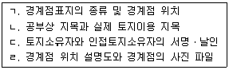
- ㄱ, ㄹ
- ㄴ, ㄷ
- ㄷ, ㄹ
- ㄱ, ㄴ, ㄹ
- ㄱ, ㄴ, ㄷ, ㄹ
(정답률: 34%)
50. 공간정보의 구축 및 관리 등에 관한 법령상 지적공부의 관리 등에 관한 설명으로 틀린 것은?
- 지적공부를 정보처리시스템을 통하여 기록ㆍ저장한 경우 관할 시ㆍ도지사, 시장ㆍ군수 또는 구청장은 그 지적공부를 지적정보관리체계에 영구히 보존하여야 한다.
- 지적소관청은 해당 청사에 지적서고를 설치하고 그 곳에 지적공부(정보처리시스템을 통하여 기록ㆍ저장한 경우는 제외한다)를 영구히 보존하여야 한다.
- 국토교통부장관은 지적공부를 과세나 부동산정책자료 등으로 활용하기 위하여 주민등록전산자료, 가족관계등록전산자료, 부동산등기전산자료 또는 공시지가전산자료 등을 관리하는 기관에 그 자료를 요청할 수 있다.
- 토지소유자가 자기 토지에 대한 지적전산자료를 신청하거나, 토지소유자가 사망하여 그 상속인이 피상속인의 토지에 대한 지적전산자료를 신청하는 경우에는 승인을 받지 아니할 수 있다.
- 지적소관청은 지적공부의 전부 또는 일부가 멸실되거나 훼손되어 이를 복구하고자 하는 경우에는 국토교통부장관의 승인을 받아야 한다.
(정답률: 45%)
51. 공간정보의 구축 및 관리 등에 관한 법령상 축척변경 사업에 따른 청산금에 관한 내용이다. ( )에 들어갈 사항으로 옳은 것은?(관련 규정 개정전 문제로 여기서는 기존 정답인 2번을 누르면 정답 처리됩니다. 자세한 내용은 해설을 참고하세요.)
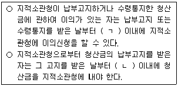
- ㄱ : 15일, ㄴ : 6개월
- ㄱ : 1개월, ㄴ : 3개월
- ㄱ : 1개월, ㄴ : 6개월
- ㄱ : 3개월, ㄴ : 6개월
- ㄱ : 3개월, ㄴ : 1년
(정답률: 22%)
52. 공간정보의 구축 및 관리 등에 관한 법령상 지적측량성과에 대하여 다툼이 있는 경우에 토지소유자, 이해관계인 또는 지적측량수행자가 관할 시ㆍ도지사를 거쳐 지적측량 적부심사를 청구할 수 있는 위원회는?
- 지적재조사위원회
- 지방지적위원회
- 축척변경위원회
- 토지수용위원회
- 국가지명위원회
(정답률: 47%)
53. 전세권등기에 관한 설명으로 옳은 것은?
- 전세권의 이전등기는 주등기로 한다.
- 등기관이 전세권설정등기를 할 때에는 전세금을 기록하여야 한다.
- 등기관이 전세권설정등기를 할 때에는 반드시 존속기간을 기록하여야 한다.
- 건물의 특정부분이 아닌 공유지분에 대한 전세권설정등기도 가능하다.
- 부동산의 일부에 대하여는 전세권설정등기를 신청할 수 없다.
(정답률: 31%)
54. 신탁등기에 관한 설명으로 틀린 것은?
- 신탁의 일부가 종료되어 권리이전등기와 함께 신탁등기의 변경등기를 할 때에는 하나의 순위번호를 사용한다.
- 신탁재산에 속하는 부동산의 신탁등기는 수탁자가 단독으로 신청한다.
- 신탁재산이 수탁자의 고유재산이 되었을 때에는 그 뜻의 등기를 부기등기로 하여야 한다.
- 신탁가등기의 등기신청도 가능하다.
- 신탁등기의 신청은 해당 신탁으로 인한 권리의 이전 또는 보존이나 설정등기의 신청과 함께 1건의 신청정보로 일괄하여 하여야 한다.
(정답률: 20%)
55. 등기신청의 각하 사유가 아닌 것은?
- 공동가등기권자 중 일부의 가등기권자가 자기의 지분만에 관하여 본등기를 신청한 경우
- 구분건물의 전유부분과 대지사용권의 분리처분 금지에 위반한 등기를 신청한 경우
- 저당권을 피담보채권과 분리하여 양도하거나, 피담보채권과 분리하여 다른 채권의 담보로 하는 등기를 신청한 경우
- 이미 보존등기된 부동산에 대하여 다시 보존등기를 신청한 경우
- 법령에 근거가 없는 특약사항의 등기를 신청한 경우
(정답률: 23%)
56. 말소등기에 관련된 설명으로 틀린 것은?
- 말소등기를 신청하는 경우, 그 말소에 대하여 등기상 이해관계 있는 제3자가 있으면 그 제3자의 승낙이 필요하다.
- 근저당권설정등기 후 소유권이 제3자에게 이전된 경우, 제3취득자가 근저당권설정자와 공동으로 그 근저당권말소등기를 신청할 수 있다.
- 말소된 등기의 회복을 신청하는 경우, 등기상 이해관계 있는 제3자가 있을 때에는 그 제3자의 승낙이 필요하다.
- 근저당권이 이전된 후 근저당권의 양수인은 소유자인 근저당설정자와 공동으로 그 근저당권말소등기를 신청 할 수 있다.
- 가등기의무자는 가등기명의인의 승낙을 받아 단독으로 가등기의 말소를 신청할 수 있다.
(정답률: 22%)
57. 담보권의 등기에 관한 설명으로 옳은 것은?
- 일정한 금액을 목적으로 하지 아니하는 채권을 담보하기 위한 저당권설정등기는 불가능하다.
- 채권자가 수인인 근저당권의 설정등기를 할 경우, 각 채권자별로 채권최고액을 구분하여 등기부에 기록한다.
- 채권의 일부에 대한 대위변제로 인한 저당권 일부이전등기는 불가능하다.
- 근저당권의 피담보채권이 확정되기 전에 그 피담보채권이 양도된 경우, 이를 원인으로 하여 근저당권이전등기를 신청할 수 없다.
- 근저당권이전등기를 신청할 경우, 근저당권설정자가 물상보증인이면 그의 승낙을 증명하는 정보를 등기소에 제공하여야 한다.
(정답률: 19%)
58. 등기에 관한 설명으로 틀린 것은?(다툼이 있으면 판례에 따름)
- 등기원인을 실제와 다르게 증여를 매매로 등기한 경우, 그 등기가 실체관계에 부합하면 유효하다.
- 미등기부동산을 대장상 소유자로부터 양수인이 이전받아 양수인명의로 소유권보존등기를 한 경우, 그 등기가 실체관계에 부합하면 유효하다.
- 전세권설정등기를 하기로 합의하였으나 당사자 신청의 착오로 임차권으로 등기된 경우, 그 불일치는 경정등기로 시정할 수 있다.
- 권리자는 甲임에도 불구하고 당사자 신청의 착오로 乙명의로 등기된 경우, 그 불일치는 경정등기로 시정할 수 없다.
- 건물에 관한 보존등기상의 표시와 실제건물과의 사이에 건물의 건축시기, 건물 각 부분의 구조, 평수, 소재 지번 등에 관하여 다소의 차이가 있다 할지라도 사회통념상 동일성 혹은 유사성이 인식될 수 있으면 그 등기는 당해 건물에 관한 등기로서 유효하다.
(정답률: 23%)
59. 법인 아닌 사단이 등기신청을 하는 경우, 등기소에 제공하여야 할 정보에 관한 설명으로 틀린 것은?
- 대표자의 성명, 주소 및 주민등록번호를 신청정보의 내용으로 제공하여야 한다.
- 법인 아닌 사단이 등기권리자인 경우, 사원총회결의가 있었음을 증명하는 정보를 첨부정보로 제공하여야 한다.
- 등기되어 있는 대표자가 등기를 신청하는 경우, 대표자임을 증명하는 정보를 첨부정보로 제공할 필요가 없다.
- 대표자의 주소 및 주민등록번호를 증명하는 정보를 첨부정보로 제공하여야 한다.
- 정관이나 그 밖의 규약의 정보를 첨부정보로 제공하여야 한다.
(정답률: 20%)
60. 등기의 효력에 관한 설명으로 틀린 것은?(다툼이 있으면 판례에 따름)
- 등기를 마친 경우 그 등기의 효력은 대법원규칙으로 정하는 등기신청정보가 전산정보처리조직에 저장된 때 발생한다.
- 대지권을 등기한 후에 한 건물의 권리에 관한 등기는 건물만에 관한 것이라는 뜻의 부기등기가 없으면 대지권에 대하여 동일한 등기로서 효력이 있다.
- 같은 주등기에 관한 부기등기 상호간의 순위는 그 등기 순서에 따른다.
- 소유권이전등기청구권을 보전하기 위한 가등기에 대하여는 가압류등기를 할 수 없다.
- 등기권리의 적법추정은 등기원인의 적법에서 연유한 것이므로 등기원인에도 당연히 적법추정이 인정된다.
(정답률: 33%)
61. 소유권이전등기에 관한 내용으로 틀린 것은?
- 상속을 원인으로 하여 농지에 대한 소유권이전등기를 신청하는 경우, 농지취득자격증명은 필요하지 않다.
- 소유권의 일부에 대한 이전등기를 신청하는 경우, 이전되는 지분을 신청정보의 내용으로 등기소에 제공하여야 한다.
- 소유권이 대지권으로 등기된 구분건물의 등기기록에는 건물만에 관한 소유권이전등기를 할 수 없다.
- 소유권이전등기절차의 이행을 명하는 확정판결이 있는 경우, 그 판결 확정 후 10년을 경과하면 그 판결에 의한 등기를 신청할 수 없다.
- 승소한 등기권리자가 단독으로 판결에 의한 소유권이전 등기를 신청하는 경우, 등기의무자의 권리에 관한 등기 필정보를 제공할 필요가 없다.
(정답률: 24%)
62. 가등기에 관한 내용으로 틀린 것은?(오류 신고가 접수된 문제입니다. 반드시 정답과 해설을 확인하시기 바랍니다.)
- 소유권보존등기의 가등기는 할 수 없다.
- 가등기 후 소유권을 취득한 제3취득자는 가등기 말소를 신청할 수 있다.
- 청산절차를 거치지 아니하여 첨부정보를 제공하지 아니한 채 담보가등기에 기초하여 본등기가 이루어진 경우, 등기관은 그 본등기를 직권으로 말소할 수 있다.
- 가등기 후 제3자에게 소유권이 이전된 경우, 가등기에 의한 본등기 신청의 등기의무자는 가등기를 할 때의 소유자이다.
- 가등기가처분명령에 의하여 이루어진 가등기의 말소는 통상의 가등기 말소절차에 따라야 하며,「민사집행법」에서 정한 가처분 이의의 방법으로 가등기의 말소를 구할 수 없다.
(정답률: 29%)
63. 소유권보존등기의 내용으로 틀린 것은?
- 건물에 대하여 국가를 상대로 한 소유권확인판결에 의해서 자기의 소유권을 증명하는 자는 소유권보존등기를 신청할 수 있다.
- 일부지분에 대한 소유권보존등기를 신청한 경우에는 그 등기신청은 각하되어야 한다.
- 토지에 관한 소유권보존등기의 경우, 당해 토지가 소유권보존등기 신청인의 소유임을 이유로 소유권보존등기의 말소를 명한 확정판결에 의해서 자기의 소유권을 증명하는 자는 소유권보존등기를 신청할 수 있다.
- 1동의 건물에 속하는 구분건물 중 일부만에 관하여 소유권보존등기를 신청하는 경우에는 나머지 구분건물의 표시에 관한 등기를 동시에 신청하여야 한다.
- 미등기 주택에 대하여 임차권등기명령에 의한 등기촉탁이 있는 경우에 등기관은 직권으로 소유권보존등기를 한 후 주택임차권등기를 하여야 한다.
(정답률: 20%)
64. 등기관의 처분에 대한 이의신청에 관한 내용으로 틀린 것은?
- 이의신청은 새로운 사실이나 새로운 증거방법을 근거로 할 수 있다.
- 상속인이 아닌 자는 상속등기가 위법하다 하여 이의신청을 할 수 없다.
- 이의신청은 구술이 아닌 서면으로 하여야 하며, 그 기간에는 제한이 없다.
- 이의에는 집행정지의 효력이 없다.
- 등기신청의 각하결정에 대한 이의신청은 등기관의 각하 결정이 부당하다는 사유로 족하다.
(정답률: 28%)
65. 지방세법상 부동산 취득시 취득세 과세표준에 적용 되는 표준세율로 옳은 것을 모두 고른 것은?
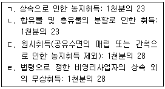
- ㄱ, ㄴ
- ㄴ, ㄷ
- ㄱ, ㄷ
- ㄴ, ㄷ, ㄹ
- ㄱ, ㄴ, ㄷ, ㄹ
(정답률: 39%)
66. 지방세법상 등록면허세에 관한 설명으로 옳은 것은?
- 부동산 등기에 대한 등록면허세 납세지는 부동산 소유자의 주소지이다.
- 등록을 하려는 자가 신고의무를 다하지 않은 경우 등록 면허세 산출세액을 등록하기 전까지 납부하였을 때에는 신고ㆍ납부한 것으로 보지만 무신고 가산세가 부과된다.
- 상속으로 인한 소유권 이전 등기의 세율은 부동산 가액의 1천분의 15로 한다.
- 부동산을 등기하려는 자는 과세표준에 세율을 적용하여 산출한 세액을 등기를 하기 전까지 납세지를 관할하는 지방자치단체의 장에게 신고ㆍ납부하여야 한다.
- 대도시 밖에 있는 법인의 본점이나 주사무소를 대도시로 전입함에 따른 등기는 법인등기에 대한 세율의 100분의 200을 적용한다.
(정답률: 37%)
67. 지방세법상 취득세의 과세표준 및 세율에 관한 설명으로 틀린 것은?
- 취득세의 과세표준은 취득 당시의 가액으로 한다. 다만, 연부로 취득하는 경우의 과세표준은 매회 사실상 지급되는 금액을 말하며, 취득금액에 포함되는 계약보증금을 포함한다.(단, 신고가액은 시가표준액보다 큼)
- 건축(신축ㆍ재축 제외)으로 인하여 건축물 면적이 증가 할 때에는 그 증가된 부분에 대하여 원시취득으로 보아 해당 세율을 적용한다.
- 환매등기를 병행하는 부동산의 매매로서 환매기간 내에 매도자가 환매한 경우의 그 매도자와 매수자의 취득에 대한 취득세는 표준세율에 중과기준세율(100분의 200)을 합한 세율로 산출한 금액으로 한다.
- 토지를 취득한 자가 그 취득한 날부터 1년 이내에 그에 인접한 토지를 취득한 경우에는 그 전후의 취득에 관한 토지의 취득을 1건의 토지 취득으로 보아 면세점을 적용한다.
- 지방자치단체장은 조례로 정하는 바에 따라 취득세 표준세율의 100분의 50 범위에서 가감할 수 있다.
(정답률: 38%)
68. 지방세기본법상 부과 및 징수, 불복에 관한 설명으로 옳은 것은?
- 납세자가 법정신고기한까지 소득세의 과세표준신고서를 제출하지 아니하여 해당 지방소득세를 부과할 수 없는 경우에 지방세 부과 제척기간은 5년이다.
- 지방세에 관한 불복시 불복청구인은 이의신청을 거치지 않고 심판청구를 제기할 수 없다.
- 취득세는 원칙적으로 보통징수 방법에 의한다.
- 납세의무자가 지방세관계법에 따른 납부기한까지 지방세를 납부하지 않은 경우 산출세액의 100분의 20을 가산세로 부과한다.
- 지방자치단체 징수금의 징수순위는 체납처분비, 지방세, 가산금의 순서로 한다.
(정답률: 19%)
69. 지방세법상 취득세의 납세의무자 등에 관한 설명으로 옳은 것은?
- 취득세는 부동산, 부동산에 준하는 자산, 어업권을 제외한 각종 권리 등을 취득한 자에게 부과한다.
- 건축물 중 조작설비로서 그 주체구조부와 하나가 되어 건축물로서의 효용가치를 이루고 있는 것에 대하여는 주체구조부 취득자 외의 자가 가설한 경우에도 주체구조부의 취득자가 함께 취득한 것으로 본다.
- 법인설립 시 발행하는 주식을 취득함으로써 지방세기본법에 따른 과점주주가 되었을 때에는 그 과점주주가 해당 법인의 부동산등을 취득한 것으로 본다.
- 토지의 지목을 사실상 변경함으로써 그 가액이 증가한 경우에 취득으로 보지 아니한다.
- 증여자의 채무를 인수하는 부담부증여의 경우에 그 채무액에 상당하는 부분은 부동산등을 유상 취득한 것으로 보지 아니한다.
(정답률: 41%)
70. 지방세기본법상 특별시세 세목이 아닌 것은?
- 주민세
- 취득세
- 지방소비세
- 지방교육세
- 등록면허세
(정답률: 39%)
71. 소득세법상 양도에 해당하는 것으로 옳은 것은?
- 법원의 확정판결에 의하여 신탁해지를 원인으로 소유권 이전등기를 하는 경우
- 법원의 확정판결에 의한 이혼위자료로 배우자에게 토지의 소유권을 이전하는 경우
- 공동소유의 토지를 공유자지분 변경없이 2개 이상의 공유토지로 분할하였다가 공동지분의 변경없이 그 공유토지를 소유지분별로 단순히 재분할 하는 경우
- 본인 소유자산을 경매ㆍ공매로 인하여 자기가 재취득하는 경우
- 매매원인 무효의 소에 의하여 그 매매사실이 원인무효로 판시되어 환원될 경우
(정답률: 38%)
72. 2007년 취득 후 등기한 토지를 2015년 6월 15일에 양도한 경우, 소득세법상 토지의 양도차익계산에 관한 설명으로 틀린 것은?(단, 특수관계자와의 거래가 아님)
- 취득당시 실지거래가액을 확인할 수 없는 경우에는 매매 사례가액, 환산가액, 감정가액, 기준시가를 순차로 적용하여 산정한 가액을 취득가액으로 한다.
- 양도와 취득시의 실지거래가액을 확인할 수 있는 경우에는 양도가액과 취득가액을 실지거래가액으로 산정한다.
- 취득가액을 실지거래가액으로 계산하는 경우 자본적 지출액은 필요경비에 포함된다.
- 취득가액을 매매사례가액으로 계산하는 경우 취득당시 개별공시지가에 3/100을 곱한 금액이 필요경비에 포함된다.
- 양도가액을 기준시가에 따를 때에는 취득가액도 기준시가에 따른다.
(정답률: 39%)
73. 소득세법상 건물의 양도에 따른 장기보유특별공제에 관한 설명으로 틀린 것은?
- 100분의 70의 세율이 적용되는 미등기 건물에 대해서는 장기보유특별공제를 적용하지 아니한다.
- 보유기간이 3년 이상인 등기된 상가건물은 장기보유특별공제가 적용된다.
- 1세대1주택 요건을 충족한 고가주택(보유기간 2년 6개월)이 과세되는 경우 장기보유특별공제가 적용된다.
- 장기보유특별공제액은 건물의 양도차익에 보유기간별 공제율을 곱하여 계산한다.
- 보유기간이 12년인 등기된 상가건물의 보유기간별 공제율은 100분의 30이다.
(정답률: 41%)
74. 소득세법상 사업자가 아닌 거주자 甲이 2015년 5월 15일에 토지(토지거래계약에 관한 허가구역 외에 존재)를 양도하였고, 납부할 양도소득세액은 1천5백만원이다. 이 토지의 양도소득세 신고납부에 관한 설명으로 틀린 것은?(단, 과세기간 중 당해 거래 이외에 다른 양도거래는 없고, 답지항은 서로 독립적이며 주어진 조건 외에는 고려하지 않음)
- 2015년 7월 31일까지 양도소득과세표준을 납세지 관할세무서장에게 신고하여야 한다.
- 예정신고를 하지 않은 경우 확정신고를 하면, 예정신고에 대한 가산세는 부과되지 아니한다.
- 예정신고하는 경우 양도소득세의 분할납부가 가능하다.
- 예정신고를 한 경우에는 확정신고를 하지 아니할 수 있다.
- 토지가 법률에 따라 수용된 경우로서 예정신고 시 양도소득세를 물납하고자 하는 경우, 예정신고기한 10일전까지 납세지 관할 세무서장에게 신청하여야 한다.
(정답률: 29%)
75. 1세대 1주택 요건을 충족하는 거주자 甲이 다음과 같은 단층 겸용주택(주택은 국내 상시주거용이며, 도시지역 내에 존재)을 7억원에 양도하였을 경우 양도소득세가 과세되는 건물면적과 토지면적으로 옳은 것은?(단, 주어진 조건 외에는 고려하지 않음)
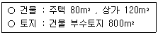
- 건물 120m2 , 토지 320m2
- 건물 120m2 , 토지 400m2
- 건물 120m2 , 토지 480m2
- 건물 200m2 , 토지 400m2
- 건물 200m2 , 토지 480m2
(정답률: 22%)
76. 소득세법상 거주자의 양도소득세 과세대상이 아닌것은?(단, 국내 자산을 가정함)
- 지상권의 양도
- 전세권의 양도
- 골프회원권의 양도
- 등기되지 않은 부동산임차권의 양도
- 사업용 건물과 함께 양도하는 영업권
(정답률: 43%)
77. 지방세법상 재산세의 과세표준과 세율에 관한 설명으로 틀린 것은?
- 주택에 대한 과세표준은 주택 시가표준액에 100분의 60의 공정시장가액비율을 곱하여 산정한다.
- 주택이 아닌 건축물에 대한 과세표준은 건축물 시가표준액에 100분의 70의 공정시장가액비율을 곱하여 산정한다.
- 토지에 대한 과세표준은 사실상 취득가격이 증명되는 때에는 장부가액으로 한다.
- 같은 재산에 대하여 둘 이상의 세율이 해당되는 경우에는 그 중 높은 세율을 적용한다.
- 주택에 대한 재산세는 주택별로 표준세율을 적용한다.
(정답률: 39%)
78. 지방세법상 재산세 부과ㆍ징수에 관한 설명으로 틀린 것은?
- 해당 연도에 주택에 부과할 세액이 100만원인 경우 납기를 7월 16일부터 7월 31일까지로 하여 한꺼번에 부과ㆍ징수한다.
- 재산세를 징수하려면 토지, 건축물, 주택, 선박 및 항공기로 각각 구분된 납세고지서에 과세표준과 세액을 적어 늦어도 납기개시 5일 전까지 발급하여야 한다.
- 토지에 대한 재산세는 납세의무자별로 한 장의 납세고지서로 발급하여야 한다.
- 재산세는 관할 지방자치단체의 장이 세액을 산정하여 보통징수의 방법으로 부과ㆍ징수한다.
- 고지서 1장당 징수할 세액이 2천원 미만인 경우에는 해당 재산세를 징수하지 아니한다.
(정답률: 38%)
79. 종합부동산세의 과세기준일 현재 과세대상자산이 아닌 것을 모두 고른 것은?(단, 주어진 조건 외에는 고려하지 않음)
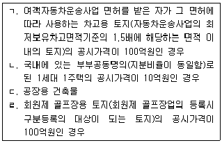
- ㄱ, ㄴ
- ㄷ, ㄹ
- ㄱ, ㄴ, ㄷ
- ㄱ, ㄷ, ㄹ
- ㄴ, ㄷ, ㄹ
(정답률: 23%)
80. 지방세법상 2015년 재산세 과세기준일 현재 납세의무자가 아닌 것을 모두 고른 것은?
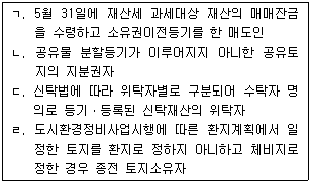
- ㄱ, ㄷ
- ㄴ, ㄹ
- ㄱ, ㄴ, ㄹ
- ㄱ, ㄷ, ㄹ
- ㄴ, ㄷ, ㄹ
(정답률: 20%)
3과목: 임의구분
81. 국토의 계획 및 이용에 관한 법령상 광역도시계획에 관한 설명으로 틀린 것은?
- 동일 지역에 대하여 수립된 광역도시계획의 내용과 도시ㆍ군기본계획의 내용이 다를 때에는 광역도시계획의 내용이 우선한다.
- 광역계획권은 광역시장이 지정할 수 있다.
- 도지사는 시장 또는 군수가 협의를 거쳐 요청하는 경우에는 단독으로 광역도시계획을 수립할 수 있다.
- 광역도시계획을 수립하려면 광역도시계획의 수립권자는 미리 공청회를 열어야 한다.
- 국토교통부장관이 조정의 신청을 받아 광역도시계획의 내용을 조정하는 경우 중앙도시계획위원회의 심의를 거쳐야 한다.
(정답률: 38%)
82. 국토의 계획 및 이용에 관한 법령상 도시ㆍ군관리계획에 관한 설명으로 틀린 것은?
- 도시ㆍ군관리계획 결정의 효력은 지형도면을 고시한 날의 다음 날부터 발생한다.
- 용도지구의 지정은 도시ㆍ군관리계획으로 결정한다.
- 주민은 기반시설의 설치ㆍ정비 또는 개량에 관한 사항에 대하여 입안권자에게 도시ㆍ군관리계획의 입안을 제안할 수 있다.
- 도시ㆍ군관리계획은 광역도시계획과 도시ㆍ군기본계획에 부합되어야 한다.
- 도시ㆍ군관리계획을 조속히 입안하여야 할 필요가 있다고 인정되면 도시ㆍ군기본계획을 수립할 때에 도시ㆍ군관리계획을 함께 입안할 수 있다.
(정답률: 40%)
83. 국토의 계획 및 이용에 관한 법령상 기반시설부담구역에 설치가 필요한 기반시설에 해당하지 않는 것은?
- 공원
- 도로
- 대학
- 폐기물처리시설
- 녹지
(정답률: 42%)
84. 국토의 계획 및 이용에 관한 법령상 공동구가 설치된 경우 공동구에 수용하기 위하여 공동구협의회의 심의를 거쳐야 하는 시설은?
- 전선로
- 수도관
- 열수송관
- 가스관
- 통신선로
(정답률: 43%)
85. 국토의 계획 및 이용에 관한 법령상 ( ) 안에 알맞은 것은?
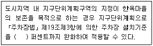
- 20
- 30
- 50
- 80
- 100
(정답률: 41%)
86. 국토의 계획 및 이용에 관한 법령상 도시ㆍ군계획시설부지의 매수청구에 관한 설명으로 틀린 것은? (단, 토지는 지목이 대(垈)이며, 조례는 고려하지 않음)
- 매수의무자가 매수하기로 결정한 토지는 매수 결정을 알린 날부터 3년 이내에 매수하여야 한다.
- 지방자치단체가 매수의무자인 경우에는 토지소유자가 원하는 경우에 채권을 발행하여 매수대금을 지급할 수 있다.
- 도시ㆍ군계획시설채권의 상환기간은 10년 이내로 한다.
- 매수청구를 한 토지의 소유자는 매수의무자가 매수하지 아니하기로 결정한 경우에는 개발행위허가를 받아서 공작물을 설치할 수 있다.
- 해당 도시ㆍ군계획시설사업의 시행자가 정하여진 경우에는 그 시행자에게 토지의 매수를 청구할 수 있다.
(정답률: 40%)
87. 국토의 계획 및 이용에 관한 법령상 도시ㆍ군관리계획으로 결정하여야 하는 사항만을 모두 고른 것은?
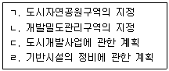
- ㄴ
- ㄷ, ㄹ
- ㄱ, ㄴ, ㄷ
- ㄱ, ㄴ, ㄹ
- ㄱ, ㄷ, ㄹ
(정답률: 35%)
88. 국토의 계획 및 이용에 관한 법령상 기반시설의 종류와 그 해당시설의 연결로 틀린 것은?
- 교통시설 - 폐차장
- 공간시설 - 유원지
- 공공ㆍ문화체육시설 - 청소년수련시설
- 방재시설 - 저수지
- 환경기초시설 - 하수도
(정답률: 40%)
89. 국토의 계획 및 이용에 관한 법령상 용도지역에 관한 설명으로 틀린 것은?
- 도시지역의 축소에 따른 용도지역의 변경을 도시ㆍ군관리계획으로 입안하는 경우에는 주민 및 지방의회의 의견청취 절차를 생략할 수 있다.
- 「택지개발촉진법」에 따른 택지개발지구로 지정ㆍ고시 되었다가 택지개발사업의 완료로 지구 지정이 해제되면 그 지역은 지구 지정 이전의 용도지역으로 환원된 것으로 본다.
- 관리지역에서「농지법」에 따른 농업진흥지역으로 지정ㆍ고시된 지역은「국토의 계획 및 이용에 관한 법률」에 따른 농림지역으로 결정ㆍ고시된 것으로 본다.
- 용도지역을 다시 세부 용도지역으로 나누어 지정하려면 도시ㆍ군관리계획으로 결정하여야 한다.
- 도시지역이 세부 용도지역으로 지정되지 아니한 경우에는 용도지역의 용적률 규정을 적용할 때에 보전녹지지역에 관한 규정을 적용한다.
(정답률: 25%)
90. 국토의 계획 및 이용에 관한 법령상 개발행위허가에 관한 설명으로 틀린 것은?(단, 조례는 고려하지 않음)
- 토지 분할에 대해 개발행위허가를 받은 자가 그 개발행위를 마치면 관할 행정청의 준공검사를 받아야 한다.
- 건축물의 건축에 대해 개발행위허가를 받은 후 건축물 연면적을 5 퍼센트 범위 안에서 확대하려면 변경허가를 받아야 한다.
- 개발행위허가를 하는 경우 미리 허가신청자의 의견을 들어 경관 등에 관한 조치를 할 것을 조건으로 허가할 수 있다.
- 도시ㆍ군관리계획의 시행을 위한「도시개발법」에 따른 도시개발사업에 의해 건축물을 건축하는 경우에는 개발행위허가를 받지 않아도 된다.
- 토지의 일부를 공공용지로 하기 위해 토지를 분할하는 경우에는 개발행위허가를 받지 않아도 된다.
(정답률: 27%)
91. 국토의 계획 및 이용에 관한 법령상 도시ㆍ군계획시설에 관한 설명으로 옳은 것은?
- 도시지역에서 사회복지시설을 설치하려면 미리 도시ㆍ군관리계획으로 결정하여야 한다.
- 도시ㆍ군계획시설 부지에 대한 매수청구의 대상은 지목이 대(垈)인 토지에 한정되며, 그 토지에 있는 건축물은 포함되지 않는다.
- 용도지역 안에서의 건축물의 용도ㆍ종류 및 규모의 제한에 대한 규정은 도시ㆍ군계획시설에 대해서도 적용된다.
- 도시ㆍ군계획시설 부지에서 도시ㆍ군관리계획을 입안하는 경우에는 그 계획의 입안을 위한 토지적성평가를 실시하지 아니할 수 있다.
- 도시ㆍ군계획시설사업의 시행자가 행정청인 경우, 시행자의 처분에 대해서는 행정심판을 제기할 수 없다.
(정답률: 30%)
92. 甲은 A도 B군에 토지 110제곱미터를 소유한 자로서, 관할 A도지사는 甲의 토지 전부가 포함된 녹지지역 일대를 토지거래계약 허가구역으로 지정하였다. 국토의 계획 및 이용에 관한 법령상 이에 관한 설명으로 틀린 것은?(단, A도지사는 허가를 요하지 아니하는 토지의 면적을 따로 정하지 않았음)
- 甲이 자신의 토지 전부에 대해 대가를 받고 지상권을 설정하려면 토지거래계약 허가를 받아야 한다.
- 甲의 토지가 농지라면 토지거래계약 허가를 받은 경우에는 「농지법」에 따른 농지취득자격증명을 받은 것으로 본다.
- 허가구역에 거주하는 농업인 乙이 그 허가구역에서 농업을 경영하기 위해 甲의 토지 전부를 임의매수하는 경우에는 토지거래계약 허가가 필요하지 않다.
- 丙이 자기의 거주용 주택용지로 이용하려는 목적으로 甲의 토지 전부를 임의매수하는 경우, 해당 토지거래계약 허가의 신청에 대하여 B군수는 허가하여야 한다.
- 토지거래계약 허가신청에 대해 불허가처분을 받은 경우, 甲은 그 통지를 받은 날부터 1개월 이내에 B군수에게 해당 토지에 관한 권리의 매수를 청구할 수 있다.
(정답률: 19%)
93. 도시개발법령상 환지처분의 효과에 관한 설명으로 틀린 것은?
- 환지 계획에서 정하여진 환지는 그 환지처분이 공고된 날의 다음 날부터 종전의 토지로 본다.
- 환지처분은 행정상 처분으로서 종전의 토지에 전속(專屬)하는 것에 관하여 영향을 미친다.
- 도시개발구역의 토지에 대한 지역권은 도시개발사업의 시행으로 행사할 이익이 없어진 경우 환지처분이 공고된 날이 끝나는 때에 소멸한다.
- 보류지는 환지 계획에서 정한 자가 환지처분이 공고된 날의 다음 날에 해당 소유권을 취득한다.
- 청산금은 환지처분이 공고된 날의 다음 날에 확정된다.
(정답률: 26%)
94. 도시개발법령상 토지등의 수용 또는 사용의 방식에 따른 도시개발사업 시행에 관한 설명으로 옳은 것은?
- 지방자치단체가 시행자인 경우 토지상환채권을 발행할 수 없다.
- 지방자치단체인 시행자가 토지를 수용하려면 사업대상 토지면적의 3분의 2 이상의 토지를 소유하여야 한다.
- 시행자는 조성토지를 공급받는 자로부터 해당 대금의 전부를 미리 받을 수 없다.
- 시행자는 학교를 설치하기 위한 조성토지를 공급하는 경우 해당 토지의 가격을「부동산 가격공시 및 감정평가에 관한 법률」에 따른 감정평가업자가 감정평가한 가격 이하로 정할 수 있다.
- 시행자는 지방자치단체에게 도시개발구역 전체 토지면적의 2분의 1 이내에서 원형지를 공급하여 개발하게 할 수 있다.
(정답률: 33%)
95. 도시개발법령상 국토교통부장관이 도시개발구역을 지정 할 수 있는 경우가 아닌 것은?
- 국가가 도시개발사업을 실시할 필요가 있는 경우
- 산업통상자원부장관이 10만 제곱미터 규모로 도시개발구역의 지정을 요청하는 경우
- 지방공사의 장이 30만 제곱미터 규모로 도시개발구역의 지정을 요청하는 경우
- 한국토지주택공사 사장이 30만제곱미터 규모로 국가계획과 밀접한 관련이 있는 도시개발구역의 지정을 제안하는 경우
- 천재ㆍ지변으로 인하여 도시개발사업을 긴급하게 할 필요가 있는 경우
(정답률: 32%)
96. 도시개발법령상 도시개발구역을 지정한 후에 개발계획을 수립할 수 있는 경우가 아닌 것은?
- 개발계획을 공모하는 경우
- 자연녹지지역에 도시개발구역을 지정할 때
- 도시지역 외의 지역에 도시개발구역을 지정할 때
- 국토교통부장관이 국가균형발전을 위하여 관계 중앙행정기관의 장과 협의하여 상업지역에 도시개발구역을 지정할 때
- 해당 도시개발구역에 포함되는 주거지역이 전체 도시개발구역 지정 면적의 100분의 40인 지역을 도시개발구역으로 지정할 때
(정답률: 29%)
97. 도시개발법령상 도시개발구역의 지정과 개발계획에 관한 설명으로 틀린 것은?
- 지정권자는 도시개발사업의 효율적 추진을 위하여 필요 하다고 인정하는 경우 서로 떨어진 둘 이상의 지역을 결합하여 하나의 도시개발구역으로 지정할 수 있다.
- 도시개발구역을 둘 이상의 사업시행지구로 분할하는 경우 분할 후 사업시행지구의 면적은 각각 1만 제곱미터 이상이어야 한다.
- 세입자의 주거 및 생활 안정 대책에 관한 사항은 도시 개발구역을 지정한 후에 개발계획의 내용으로 포함시킬 수 있다.
- 지정권자는 도시개발사업을 환지 방식으로 시행하려고 개발계획을 수립할 때 시행자가 지방자치단체인 경우 토지소유자의 동의를 받아야 한다.
- 도시ㆍ군기본계획이 수립되어 있는 지역에 대하여 개발 계획을 수립하려면 개발계획의 내용이 해당 도시ㆍ군기본계획에 들어맞도록 하여야 한다.
(정답률: 33%)
98. 도시개발법령상 조성토지등의 공급에 관한 설명으로 옳은 것은?
- 지정권자가 아닌 시행자가 조성토지등을 공급하려고 할 때에는 조성토지등의 공급계획을 작성하여 지정권자의 승인을 받아야 한다.
- 조성토지등을 공급하려고 할 때「주택법」에 따른 공공택지의 공급은 추첨의 방법으로 분양할 수 없다.
- 조성토지등의 가격 평가는「부동산 가격공시 및 감정평가에 관한 법률」에 따른 감정평가업자가 평가한 금액을 산술평균한 금액으로 한다.
- 공공청사용지를 지방자치단체에게 공급하는 경우에는 수의계약의 방법으로 할 수 없다.
- 토지상환채권에 의하여 토지를 상환하는 경우에는 수의계약의 방법으로 할 수 없다.
(정답률: 19%)
99. 도시 및 주거환경정비법령상 도시ㆍ주거환경정비기본계획(이하 ‘기본계획’이라 함)의 수립에 관한 설명으로 틀린 것은?
- 대도시가 아닌 시의 경우 도지사가 기본계획의 수립이 필요하다고 인정하는 시를 제외하고는 기본계획을 수립하지 아니할 수 있다.
- 기본계획을 수립하고자 하는 때에는 14일 이상 주민에게 공람하고 지방의회의 의견을 들어야 한다.
- 대도시의 시장이 아닌 시장이 기본계획을 수립한 때에는 도지사의 승인을 얻어야 한다.
- 기본계획을 수립한 때에는 지체 없이 당해 지방자치단체의 공보에 고시하여야 한다.
- 기본계획에 대하여는 3년마다 그 타당성 여부를 검토하여 그 결과를 기본계획에 반영하여야 한다.
(정답률: 32%)
100. 도시 및 주거환경정비법령상 도시환경정비사업의 시공자 선정에 관한 설명으로 틀린 것은?
- 토지등소유자가 사업을 시행하는 경우에는 경쟁입찰의 방법으로 시공자를 선정해야 한다.
- 군수가 직접 정비사업을 시행하는 경우 군수는 주민대표회의가 경쟁입찰의 방법에 따라 추천한 자를 시공자로 선정하여야 한다.
- 주민대표회의가 시공자를 추천하기 위한 입찰방식에는 일반경쟁입찰ㆍ제한경쟁입찰 또는 지명경쟁입찰이 있다.
- 조합원 100명 이하인 정비사업의 경우 조합총회에서 정관으로 정하는 바에 따라 시공자를 선정할 수 있다.
- 사업시행자는 선정된 시공자와 공사에 관한 계약을 체결할 때에는 기존 건축물의 철거공사에 관한 사항을 포함하여야 한다.
(정답률: 16%)
101. 도시 및 주거환경정비법령상 조합의 정관을 변경하기 위하여 조합원 3분의 2 이상의 동의가 필요한 사항이 아닌 것은?
- 대의원의 수 및 선임절차
- 조합원의 자격에 관한 사항
- 정비사업 예정구역의 위치 및 면적
- 조합의 비용부담 및 조합의 회계
- 시공자ㆍ설계자의 선정 및 계약서에 포함될 내용
(정답률: 24%)
102. 도시 및 주거환경정비법령상 청산금에 관한 설명으로 틀린 것은?
- 조합 총회의 의결을 거쳐 정한 경우에는 관리처분계획 인가후부터 소유권 이전의 고시일까지 청산금을 분할징수할 수 있다.
- 종전에 소유하고 있던 토지의 가격과 분양받은 대지의 가격은 그 토지의 규모ㆍ위치ㆍ용도ㆍ이용상황ㆍ정비사업비 등을 참작하여 평가하여야 한다.
- 청산금을 납부할 자가 이를 납부하지 아니하는 경우에 시장ㆍ군수가 아닌 사업시행자는 시장ㆍ군수에게 청산금의 징수를 위탁할 수 있다.
- 청산금을 징수할 권리는 소유권 이전의 고시일로부터 5년간 이를 행사하지 아니하면 소멸한다.
- 정비사업의 시행지역 안에 있는 건축물에 저당권을 설정한 권리자는 그 건축물의 소유자가 지급받을 청산금에 대하여 청산금을 지급하기 전에 압류절차를 거쳐 저당권을 행사할 수 있다.
(정답률: 15%)
103. 도시 및 주거환경정비법령상 조합의 설립에 관한 설명으로 옳은 것은?
- 조합설립인가를 받은 경우에는 따로 등기를 하지 않아도 조합이 성립된다.
- 조합임원은 같은 목적의 정비사업을 하는 다른 조합의 임원을 겸할 수 있다.
- 주택재건축사업은 조합을 설립하지 않고 토지등소유자가 직접 시행할 수 있다.
- 가로주택정비사업을 시행하는 조합을 설립하고자 하는 경우에는 추진위원회를 구성하지 아니한다.
- 조합임원이 결격사유에 해당하여 퇴임한 경우 그 임원이 퇴임 전에 관여한 행위는 효력을 잃는다.
(정답률: 21%)
104. 도시 및 주거환경정비법령상 군수가 직접 주택재개발사업을 시행할 수 있는 사유에 해당하지 않는 것은?
- 당해 정비구역 안의 토지면적 2분의 1 이상의 토지소유자와 토지등소유자의 3분의 2 이상에 해당하는 자가 군수의 직접시행을 요청하는 때
- 당해 정비구역 안의 국ㆍ공유지 면적이 전체 토지 면적의 3분의 1 이상으로서 토지등소유자의 과반수가 군수의 직접시행에 동의하는 때
- 순환정비방식에 의하여 정비사업을 시행할 필요가 있다고 인정되는 때
- 천재ㆍ지변으로 인하여 긴급히 정비사업을 시행할 필요가 있다고 인정되는 때
- 고시된 정비계획에서 정한 정비사업 시행 예정일부터 2년 이내에 사업시행인가를 신청하지 아니한 때
(정답률: 18%)
1⑤. 주택법령상 주택건설사업 등의 등록과 관련하여 ( ) 안에 들어갈 내용으로 옳게 연결된 것은? (단, 사업등록이 필요한 경우를 전제로 함)
- ㄱ: 10, ㄴ: 10만
- ㄱ: 20, ㄴ: 1만
- ㄱ: 20, ㄴ: 10만
- ㄱ: 30, ㄴ: 1만
- ㄱ: 30, ㄴ: 10만
(정답률: 28%)
106. 주택법령상 주택의 공급에 관한 설명으로 옳은 것은?
- 한국토지주택공사가 사업주체로서 복리시설의 입주자를 모집하려는 경우 시장ㆍ군수ㆍ구청장에게 신고하여야 한다.
- 지방공사가 사업주체로서 견본주택을 건설하는 경우에는 견본주택에 사용되는 마감자재 목록표와 견본주택의 각 실의 내부를 촬영한 영상물 등을 제작하여 시장ㆍ군수ㆍ구청장에게 제출하여야 한다.
- 「관광진흥법」에 따라 지정된 관광특구에서 건설ㆍ공급하는 50층 이상의 공동주택은 분양가상한제의 적용을 받는다.
- 공공택지 외의 택지로서 분양가상한제가 적용되는 지역에서 공급하는 도시형 생활주택은 분양가상한제의 적용을 받는다.
- 시ㆍ도지사는 사업계획승인 신청이 있는 날부터 30일 이내에 분양가심사위원회를 설치ㆍ운영하여야 한다.
(정답률: 24%)
107. 사업주체 甲은 사업계획승인권자 乙로부터 주택건설사업을 분할하여 시행하는 것을 내용으로 사업계획승인을 받았다. 주택법령상 이에 관한 설명으로 틀린 것은?
- 乙은 사업계획승인에 관한 사항을 고시하여야 한다.
- 甲은 최초로 공사를 진행하는 공구 외의 공구에서 해당 주택단지에 대한 최초 착공신고일부터 2년 이내에 공사를 시작하여야 한다.
- 甲이 소송 진행으로 인하여 공사착수가 지연되어 연장 신청을 한 경우, 乙은 그 분쟁이 종료된 날부터 2년의 범위에서 공사 착수기간을 연장할 수 있다.
- 주택분양보증을 받지 않은 甲이 파산하여 공사 완료가 불가능한 경우, 乙은 사업계획승인을 취소할 수 있다.
- 甲이 최초로 공사를 진행하는 공구 외의 공구에서 해당 주택단지에 대한 최초 착공신고일부터 2년이 지났음에도 사업주체가 공사를 시작하지 아니한 경우 乙은 사업계획승인을 취소할 수 없다.
(정답률: 27%)
108. 주택법령상 사업계획승인을 받은 사업주체에게 인정되는 매도청구권에 관한 설명으로 옳은 것은?
- 주택건설대지에 사용권원을 확보하지 못한 건축물이 있는 경우 그 건축물은 매도청구의 대상이 되지 않는다.
- 사업주체는 매도청구일 전 60일부터 매도청구 대상이 되는 대지의 소유자와 협의를 진행하여야 한다.
- 사업주체가 주택건설대지면적 중 100분의 90에 대하여 사용권원을 확보한 경우, 사용권원을 확보하지 못한 대지의 모든 소유자에게 매도청구를 할 수 있다.
- 사업주체가 주택건설대지면적 중 100분의 80에 대하여 사용권원을 확보한 경우, 사용권원을 확보하지 못한 대지의 소유자 중 지구단위계획구역 결정고시일 10년 이전에 해당 대지의 소유권을 취득하여 계속 보유하고 있는 자에 대하여는 매도청구를 할 수 없다.
- 사업주체가 리모델링주택조합인 경우 리모델링 결의에 찬성하지 아니하는 자의 주택에 대하여는 매도청구를 할 수 없다.
(정답률: 21%)
109. 주택법령상 ( ) 안에 알맞은 것은?
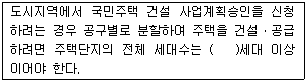
- 200
- 300
- 400
- 500
- 600
(정답률: 26%)
110. 주택법령상 주택단지 전체를 대상으로 증축형 리모델링을 하기 위하여 리모델링주택조합을 설립하려는 경우 조합설립인가 신청 시 제출해야 할 첨부서류가 아닌 것은?(단, 조례는 고려하지 않음)
- 창립총회의 회의록
- 조합원 전원이 자필로 연명한 조합규약
- 해당 주택 소재지의 100분의 80 이상의 토지에 대한 토지사용승낙서
- 해당 주택이 사용검사를 받은 후 15년 이상 경과하였음을 증명하는 서류
- 조합원 명부
(정답률: 19%)
111. 주택법령상 ( ) 안에 들어갈 내용으로 옳게 연결된 것은?(단, 주택 외의 시설과 주택이 동일 건축물로 건축되지 않음을 전제로 함)
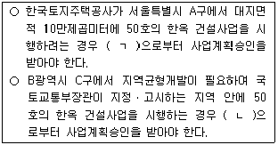
- ㄱ: 국토교통부장관 ㄴ: 국토교통부장관
- ㄱ: 서울특별시장 ㄴ: C구청장
- ㄱ: 서울특별시장 ㄴ: 국토교통부장관
- ㄱ: A구청장 ㄴ: C구청장
- ㄱ: 국토교통부장관 ㄴ: B광역시장
(정답률: 27%)
112. 건축법령상 건축법이 모두 적용되지 않는 건축물이 아닌 것은?
- 「문화재보호법」에 따른 지정문화재인 건축물
- 철도의 선로 부지에 있는 철도 선로의 위나 아래를 가로지르는 보행시설
- 고속도로 통행료 징수시설
- 지역자치센터
- 궤도의 선로 부지에 있는 플랫폼
(정답률: 30%)
113. 건축법령상 다중이용 건축물에 해당하는 것은?(단,불특정한 다수의 사람들이 이용하는 건축물을 전제로 함)
- 종교시설로 사용하는 바닥면적의 합계가 4천 제곱미터인 5층의 성당
- 문화 및 집회시설로 사용하는 바닥면적의 합계가 5천 제곱미터인 10층의 전시장
- 숙박시설로 사용하는 바닥면적의 합계가 4천 제곱미터인 16층의 관광호텔
- 교육연구시설로 사용하는 바닥면적의 합계가 5천 제곱미터인 15층의 연구소
- 문화 및 집회시설로 사용하는 바닥면적의 합계가 5천 제곱미터인 2층의 동물원
(정답률: 24%)
114. 건축법령상 실내건축의 재료 또는 장식물에 해당하는 것을 모두 고른 것은?
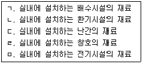
- ㄱ, ㄴ
- ㄷ, ㄹ, ㅁ
- ㄱ, ㄷ, ㄹ, ㅁ
- ㄴ, ㄷ, ㄹ, ㅁ
- ㄱ, ㄴ, ㄷ, ㄹ, ㅁ
(정답률: 29%)
115. 건축법령상 건축물의 가구ㆍ세대 등 간 소음 방지를 위한 경계벽을 설치하여야 하는 경우가 아닌 것은?
- 숙박시설의 객실 간
- 공동주택 중 기숙사의 침실 간
- 판매시설 중 상점 간
- 교육연구시설 중 학교의 교실 간
- 의료시설의 병실 간
(정답률: 34%)
116. 건축법령상 지역 및 지구의 건축물에 관한 설명으로 옳은 것은?(단, 조례 및 특별건축구역에 대한 특례는 고려하지 않음)
- 하나의 건축물이 방화벽을 경계로 방화지구와 그 밖의 구역에 속하는 부분으로 구획되는 경우, 건축물 전부에 대하여 방화지구 안의 건축물에 관한「건축법」의 규정을 적용한다.
- 하나의 건축물이 미관지구와 그 밖의 구역에 걸치는 경우, 그 건축물과 대지 전부에 대하여 미관지구 안의 건축물과 대지 등에 관한「건축법」의 규정을 적용한다.
- 대지가 녹지지역과 관리지역에 걸치면서 녹지지역 안의 건축물이 취락지구에 걸치는 경우에는 건축물과 대지 전부에 대해 취락지구에 관한「건축법」의 규정을 적용한다.
- 시장ㆍ군수는 도시의 관리를 위하여 필요하면 가로구역별 건축물의 높이를 시ㆍ군의 조례로 정할 수 있다.
- 상업지역에서 건축물을 건축하는 경우에는 일조의 확보를 위하여 건축물을 인접 대지경계선으로부터 1.5 미터 이상 띄어 건축하여야 한다.
(정답률: 18%)
117. 건축법령상 건축허가의 제한에 관한 설명으로 틀린 것은?
- 국방부장관이 국방을 위하여 특히 필요하다고 인정하여 요청하면 국토교통부장관은 허가권자의 건축허가를 제한할 수 있다.
- 교육감이 교육환경의 개선을 위하여 특히 필요하다고 인정하여 요청하면 국토교통부장관은 허가를 받은 건축물의 착공을 제한할 수 있다.
- 특별시장은 지역계획에 특히 필요하다고 인정하면 관할 구청장의 건축허가를 제한할 수 있다.
- 건축물의 착공을 제한하는 경우 제한기간은 2년 이내로 하되, 1회에 한하여 1년 이내의 범위에서 제한기간을 연장할 수 있다.
- 도지사가 관할 군수의 건축허가를 제한한 경우, 국토교통부장관은 제한 내용이 지나치다고 인정하면 해제를 명할 수 있다.
(정답률: 24%)
118. 건축법령상 공개공지 또는 공개공간을 설치하여야 하는 건축물에 해당하지 않는 것은?(단, 건축물은 해당 용도로 쓰는 바닥면적의 합계가 5천 제곱미터 이상이며, 조례는 고려하지 않음)
- 일반공업지역에 있는 종합병원
- 일반주거지역에 있는 교회
- 준주거지역에 있는 예식장
- 일반상업지역에 있는 생활숙박시설
- 유통상업지역에 있는 여객자동차터미널
(정답률: 25%)
119. 농지법령상 농지취득자격증명을 발급받지 아니하고 농지를 취득할 수 있는 경우에 해당하지 않는 것은?
- 농업법인의 합병으로 농지를 취득하는 경우
- 농지를 농업인 주택의 부지로 전용하려고 농지전용신고를 한 자가 그 농지를 취득하는 경우
- 공유농지의 분할로 농지를 취득하는 경우
- 상속으로 농지를 취득하는 경우
- 시효의 완성으로 농지를 취득하는 경우
(정답률: 26%)
120. 농지법령상 주말ㆍ체험영농을 하려고 농지를 소유하는 경우에 관한 설명으로 틀린 것은?
- 농업인이 아닌 개인도 농지를 소유할 수 있다.
- 세대원 전부가 소유한 면적을 합하여 총 1천 제곱미터 미만의 농지를 소유할 수 있다.
- 농지를 취득하려면 농지취득자격증명을 발급받아야 한다.
- 소유 농지를 농수산물 유통ㆍ가공시설의 부지로 전용하려면 농지전용신고를 하여야 한다.
- 농지를 취득한 자가 징집으로 인하여 그 농지를 주말ㆍ체험영농에 이용하지 못하게 되면 1년 이내에 그 농지를 처분하여야 한다.
(정답률: 29%)